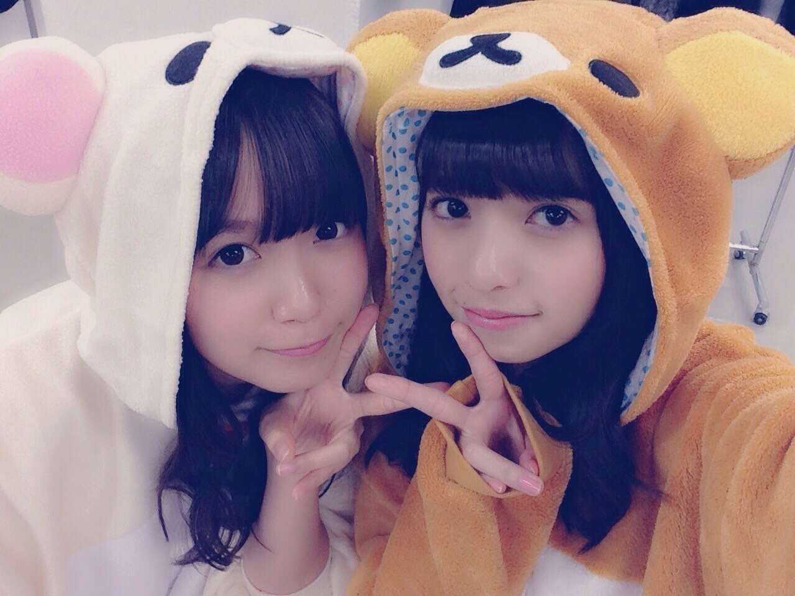
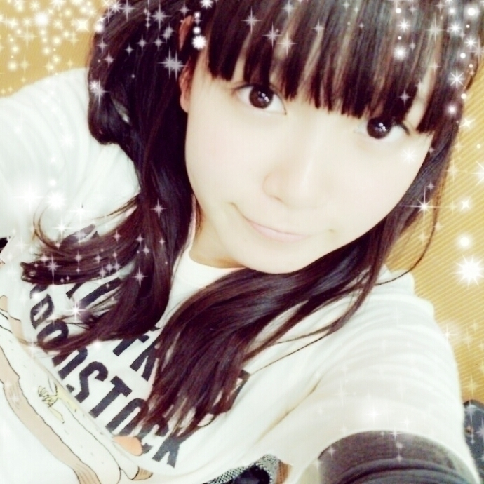
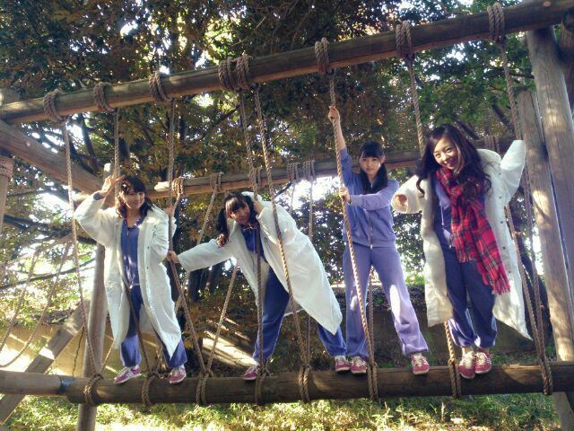
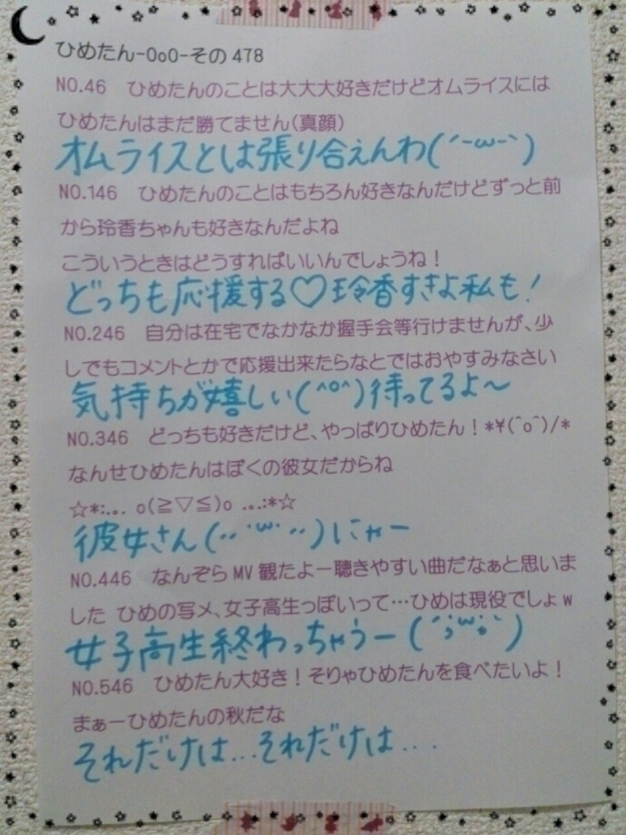

あすかりんとおそろっちの
着ぐるみお気に入りなんだな(´,,･ω･,,`)
プライベートでいつか
お泊まり会して
夜はこれ着て寝よう
いつかふたりで暮らすのが夢。
月刊エンタメ最新号に
ひめたん載ってます\( ˆoˆ )/
乃木坂ちゃんみんなが
楽曲についてコメントをしたのと、
飛鳥、永島、能條、中元で
お話させていただきました❁
アンダーライブのこととか、色々と。
他にもたくさんのメンバーが
載っているので
ぜひチェックしてください！
B.L.T.
『乃木坂46版｢NOGI CAMERA｣Vol.38』
のカメラマンもやってます！
かなりんとひめたんです( ^o^ )

上目遣いだにゃん
名古屋のスペシャルライブが
終わったので
大阪の時の報告( ˇωˇ )
何度目の青空か？(橋本ポジ)
転がった鐘を鳴らせ！(橋本ポジ)
夏のFree&Easy(深川ポジ)
走れ！Bicycle(橋本ポジ)
制服のマネキン(橋本ポジ)
ガールズルール(白石ポジ)
おいでシャンプー(高山ポジ)
あれ、全部あってるか不安なってきた。
今回は初めてのポジションが多くて
新鮮な気持ちで
ステージに立ちました( ˇωˇ )
ガールズルールのセンターは
アンダーライブで務めたこともあって
今回も選んでいただきました
選抜メンバーもいる中で
私なんかが......大丈夫かなあ......と
不安もありましたが
最後のMCで七瀬に褒めてもらったり
スタッフさんやファンのみなさんからも
よかったよ！って言っていただけて
ほっとしました(´；_；｀)♡
経験が活きたのかなあ
MCパートは昼夜とも
真夏さんとばちばちしてました♡♡
ずっきゅんとびーむは
まだまだ決着が付きませんね( ˇωˇ )
あなたのハートにずっきゅん♡
のぎ天は研究生さん初登場。
みんなでアスレチックしてます
アスレチック\( ˆoˆ )/

たんたん対決は必見だよー☆！

 ひめたんと握手するときは
ひめたんと握手するときはちゃんと自己紹介したほうがいいのカナ？
自己紹介( ˇωˇ )！
してくれると嬉しいです♡
ひめたんいつからリボンにハマったのー？乃木坂入る前から
ちょっと持ってたよ
バレーボールとテニスどっちが好きですか？
テニスやったことないけれど
「エースを狙え！」好きだったなあ
「アタックNo.1」も好きだったなあ
原作は読んだことないけど
幼い頃にドラマ観てた世代(﹡ƠωƠ﹡)
ひめたんはチョコだったらホワイトも普通の茶色いチョコ
どっちが好き？
茶色......ミルクチョコ派。
ホワイトチョコは甘すぎて
んﾞんﾞッてなる(´・ω・｀)
ひめたんはたい焼きは頭からたべる派？それとも尻尾から派？
頭から食べる派です
そういや最近美味しいたいやき屋さん
見つけたよ～＊
ひめたんはカニクリームコロッケとクリームコロッケと
どっちが好きですかね、、
カニクリームコロッケは
あんまり好きじゃないのです
カニがあんま好きじゃないの
ひめたんは三度の飯よりサプライズが好きですよね？
サプライズは胃が痛くなるにゃ(´-ω-`)
あ、ごはんも食べるもの気を付けなきゃ
ひめは胃が弱いのね(´-ω-`)
ひめたんの日記の
コメント欄下２ケタに46を踏んだ方へ
手書きでコメ返するコーナー
＼ ひめたん46 ／

いつもたくさんのコメント
ありがとうございます
めーるの返信とか
いっぱい書いてくれてるよね
みんなの全部読んでるよ～＊
コメントたくさんだと
それだけひめのひとりぼっちの時間が
減るから寂しくないんだ( ´•̥ω•̥` )♡
最近はお仕事とライブのリハ
どっちもがんばらなきゃーだからね
気持ちがばたばたしてるの
12月は師走って言うもんね
12月ってなんかうきうきそわそわする
あ！クリスマス近いじゃん♡
みんなクリスマスの過ごし方は
もう計画してるのー？
去年のクリスマスは
さゆと万理華とディナーしたの
楽しかったなあ(＊´v`＊)いい思い出。
「カープ女子」が
流行語大賞トップ10入った！
(＊´・ω・＊)